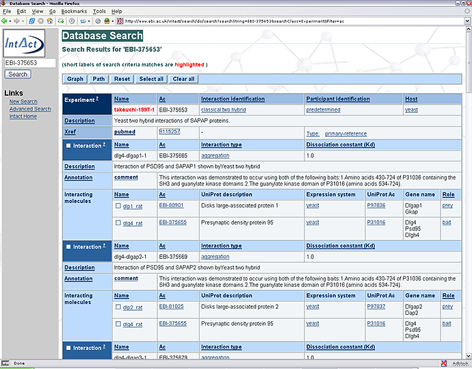
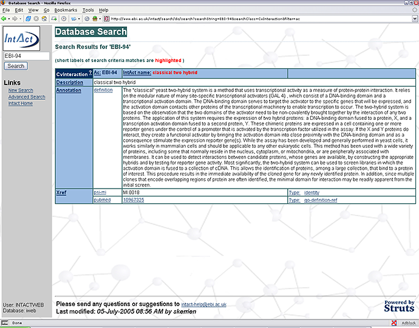
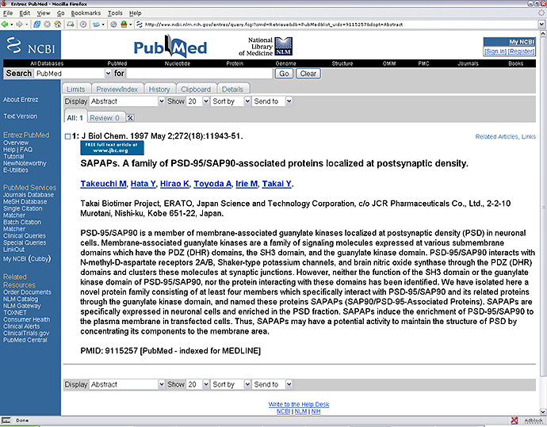
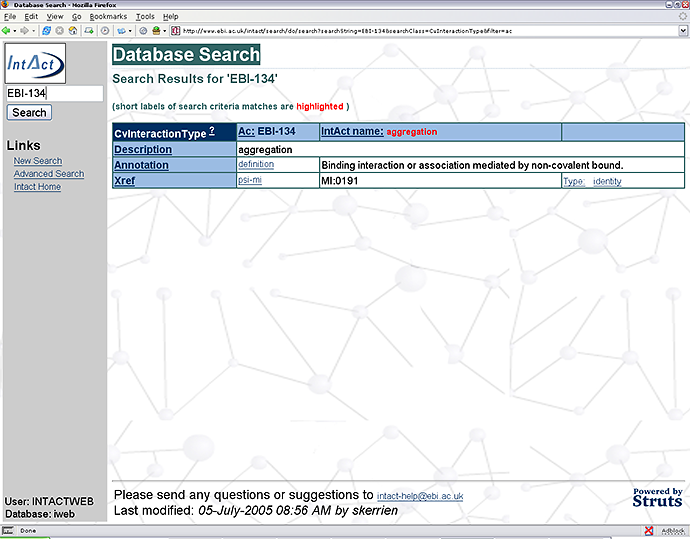

|
The design of data categories enables a wealth of specific details to be contained regarding each Interaction and Experiment.

The screen grab above shows a typical Experiment page. At the top are the details concerning the entire experiment and then a list of
the interaction discovered. By clicking on the Interaction Identification, in this case classical two hybrid, you are taken to a page
that gives the IntAct accession, a description of the technique, the PSI-MI code and a PubMed cross-reference to a relevant literature
article.

A link is also given to literature article in PubMed from which the experimental data was derived, see below, thus enabling a researcher
to learn more about the experiment.

Returning back to the first page, each Interaction is annotated with a unique name, IntAct accession number, Interaction type and details
of the Interactor molecules, including their role in the Interaction.
All controlled vocabulary annotation is hyperlinked. For example, by clicking on the Interaction type, in this case physical interaction,
the hyperlink takes you to a page that gives the IntAct accession, a description, a definition and the PSI-MI code.

|